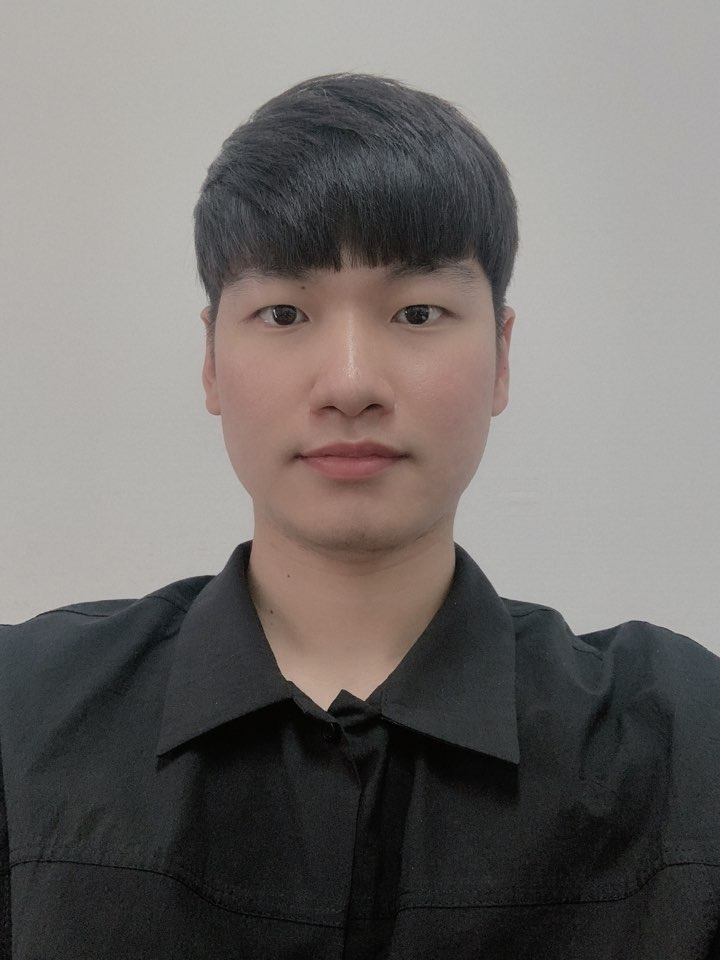

toring
"멘토링은 단순히 과외가 아닙니다."

지현준 대표
아이의 변화와 학습에 가장 도움이 되는 방법은
멘토를 직접 만나 배우고 스스로 깨닫게 하는 방법
입니다.
저희가 직접 한분 한분 대면 면접을 통해 엄선한,
SKY 재학생중에서도 가장 우수한 멘토분들을
아이의 롤모델로 만들어주세요. 멘토들이 준비한 프로그램을 통해 변화를 직접 경험해보세요.
추가 상담과 함께 멘토링을 결정하고 싶으면?
1:1 무료 상담하기
더 자세한 멘토링 내용은
멘토를 클릭하면
확인할 수 있어요!
닫기